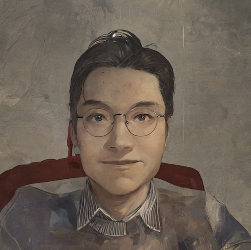

Ningyuan Sun
ChronoPilot - Modulating Time Perception
Funded by EU Horizon 2020, the ChronoPilot project explores an interesting topic about time perception in VR/AR and how we can modulate it for good use. In collaboration with researchers from several other universities, we develop various prototypes serving as the platform for scientific investigation on time perception in VR/AR.
DELICIOS - Delegating Critical Tasks to Embodied AI
DELICIOS was a 4-year international collaborative project to which my PhD research contributes and belongs. My work involved a series of experiments to reveal the rationale and psychology behind people's decisions on delegating critical tasks to embodied AI. The results were further developed into a theory offering insights in human-AI trust and collaboration.
Realistic Fluid Simulation (Master Thesis)
Simulate fluid dynamics in a visually and physically realistic manner. Written in C++, the project implemented the DFSPH algorithm with CUDA-based parallel for accelerating the computational process. The simulation results were rendered using OpenGL and exported to Houdini for better visuals.
Panorama Generation From Seperated Images (Bachelor Thesis)
Nominated as the best Bachelor project of the year. An application was developed that stitches individual images into a spherical panorama for VR. Built upon OpenCV, the application extracts SIFT feature points to match and and properly register the different images onto a sphere. Further measures were taken to balance the color and exposure of the panorama.